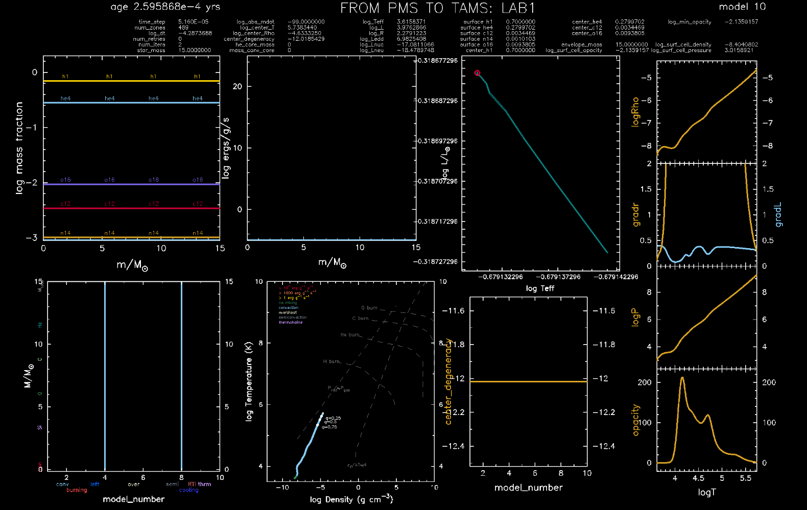

MESA LAB1
Contents
9. MESA LAB1#
Modules for Experiments in Stellar Astrophysics (MESA) [Jermyn et al., 2022] is a state of the art, open-source 1D stellar evolution code. MESA is built to allow users to run experiments in stellar evolution, with a huge variety of possibilities for input physics and customization. You are strongly encouraged to give a look at the documentation to discover more about the software. We will specifically use the MESAstar module to evolve a single star.
9.1. Practicalities#
9.1.1. Lab intro#
In this lab you will learn how to evolve a star with MESA and how to interpret its outputs in terms of the theory of stellar structure and evolution you have seen so far. In particular
-
FIRST HOUR: theoretical overview of the software. The basic numerical scheme used to solve the set of stellar structure and evolution equations; the boundary conditions for the differential equations; the software infrastructure and usage of inlists, output files.
-
SECOND HOUR: set up your simulation and save the outputs in your local machines / USB memory / personal folder in the system, as you will need to use it at home to post-process the information and write a report. This time at the lab is mainly meant for you to run the simulation while you have someone that can help you (me); if, at the end, you still have some time, you can start answering the questions of the report.
NB: you will have to run two simulations of two stars with different masses, and save both those outputs. Be sure to do that before you leave the session.
9.1.2. Instructions for the report#
9.1.2.1. General rules#
If you still have time during the second hour of the session, you can start going through the list of requests below. You will have to produce a (graded!) report about these. Try to answer to all questions completely:
-
Are you asked for a number?
If this number comes from a formula, show the formula introducing the quantities appearing in it, as well as under which physical assumptions that specific formula holds. E.g., if you’re computing a gravitational energy \(E_{\mathrm{gr}}\), we would like you to write something like:
The estimate for the gravitation potential energy \(E_{\mathrm{grav}}\) is:
\[E_{\mathrm{gr}}\equiv \int_{0}^{M} -\dfrac{Gm}{r(m)} dm= 3.14\times 10^{7} \:\mathrm{erg},\]where \(G\) is the gravitational constant, \(M\) is the total star mass and \(r=r(m)\) is the Eulerian radial coordinate along the star’s structure.
If the number comes directly out of your simulation, be sure to explicitly say where you found this information: which column of the output file are you using, and at which stage of the evolution of your system?
-
Are you asked for a derivation?
We would like to see the math with clear passages. -
Are you asked for a plot?
You can use whichever visualization tool you want to produce plots. Just be sure to make them readable: fontsize of any label / tick / legend must be the same as the written text. And everything needs to be properly labeled. Number the plots as Fig.(1), Fig.(2) … Fig.(n) and refer to those in the text, when you describe how such figure illustrates the answer to the question.
9.1.2.2. Formalities#
-
PAGE LIMIT Maximum of 4 pages (including figures) with classical font and fontsize (\(\geq\) 12pt please). Include your name and student number on the first page of the PDF.
-
SUBMISSION FORMAT Submit a tar / zip named as
name_lastname_XMsun_LAB1.zip, where \(X\) is defined as \(M=X\:M_{\odot}\) and \(M\) is the mass of your assigned star (see below!).
🚨 Attention 🚨
Include yourinlist_projecttoo!
9.1.3. Grades and deadlines#
The idea is that you go through every question; the final question (Bonus: Radiative Opacities) can give you bonus points for the final exam, but if you address all the other requests correctly and completely, you will be able to get the full grade of the report anyway. You will be given approximately 3 weeks to complete the report and send it to us.
-
GRADES Points for each question are made explicit in the text. The maximum is 16 points / 16. (Preliminary) Let us say that you totalize N points / 16: in total, this report will weight N / 4 grades out of your final 20! So if you manage to score full grade in this report, 4 points out of your final 20 are granted. Good luck! 🍀
-
DEADLINE Report must be completed by
9 December , 14:00 CET
-
TO BE SENT Via email to annachiara.picco@kuleuven.be, with the subject of the email matching the name of the attached zip / tar file, i.e. something like
name_lastname_XMsun_LAB1.zip.
9.1.4. The lab computers#
MESA (v15140) is already installed in the machines of the room 4.33 (4th floor, Instituut voor Sterrenkunde). You will not be required to install any additional package. However, to be able to complete the simulation runs, you will have to access the IvS system with your personal credentials. At the start of your Master in Astronomy & Astrophysics at KU Leuven, you should all have received those credentials. If not so, immediately tell me and we’ll figure out how to set it up as soon as possible.
To be able to run MESA from a folder of your choice, you need to set the Linux environment variables to tell your terminal where to find the software. To do so, open a terminal with ctrl+shift+T and type the following:
# Set the environment variables
module load mesasdk
module load mesa
# Check that everything is correct
echo $MESA_DIR
echo $MESASDK_VERSION
9.1.5. The MESA work folder#
In the following, I am going to assume that you are working in a folder called MESA_LAB1; you should adapt the commands to the (path of the) folder you chose to use. More specifically, you are going to work with a copy of the template work directory of the MESAstar module:
# Move to the directory of your choice
cd MESA_LAB1
# Copy the template work directory from the MESA distribution
cp -R $MESA_DIR/star/work/* .
After running your first simulation, you will see that in this folder you’ll have the following elements:
-
inlist
Fortran namelist pointing to the specific inlist for the project. -
inlist_project
Fortran namelist containing all the options for the simulation; these include input physics as well as resolution controls. It is always asvisable to give a look at the options and try to understand their meaning, by digging into the parameter libraries in$MESA_DIR/star/defaults/*. These files contain default values for all the options present in yourinlist_project, as well as their explanation and reference in literature. -
inlist_pgstar
Fortran namelist specific for the pgstar dynamic window. You can give a look at the default parameters for the pgstar inlist by looking through$MESA_DIR/star/default/pgstar.defaults. -
LOGS
Folder containing all the output files: evolutionary quantities inhistory.data, profiles information inprofileN.data. Profiles are mapped to model numbers as illustrated inprofiles.index. The profile files are printed at regular intervals during the simulation, see the optionprofile_interval = 10in yourinlist_project. -
photos
Folder containing the simulation photos: files namedxN, with N being the photo’s number, in machine-language. These are also printed at regular intervals during the simulation, see the optionphoto_interval = 10in yourinlist_project, and contain all the information about models. They are useful to be able to restart the simulation from different points along the track, in case your run is time-consuming and you want to save some time. You should not need to use those in this lab1. -
grid_png
Folder containing png snapshots of the pgstar dynamic window: these are called asgrid_N.png, where N is the model number along the evolutionary track. These are also printed at regular intervals, see the optionGrid1_file_interval = 10in yourinlist_project. -
profile_columns.list
List of all the information, about structural properties of a model at fixed time, that are printed in the output filesprofileN.data, and used in the pgstar dynamic window. -
history_columns.list
List of all the information, about evolutionary quantities along the track, that are printed in the output filehistory.data, and used in the pgstar dynamic window.
9.1.6. How to run MESA#
You will always run MESA from the folder called MESA_LAB1. In such folder, there is a very nicely written README.rst file with a reminder on how to run / compile (and restart, when needed) the simulation. In general, you will have to type the following:
# Move to the MESA_LAB1 directory
cd MESA_LAB1
# Compile and produce the executable called "star"
./mk
# Run the simulation
./rn
# Restart the simulation from the photo x050
./re x050
9.2. The assigned masses#
Due to the number of available computers in the lab, you all will be paired during the session. This means that every student (A) will have a mate (B) to look at the simulations with. Each team (A+B) of students will have to produce, during the session, a total of two simulations (1+2), and save the outputs for later use (at home). These two simulations will serve the following purposes:
-
Simulation 1 will evolve a star of initial mass \(M\). Student A will have to answer all the questions aside from Massive vs Low Mass evolution by taking into account exclusively the outcome of simulation 1. Student B will make use of the outcome of simulation 1 just to answer the aforesaid question.
-
Simulation 2 will evolve a star of initial mass \(M'\neq M\). Student B will have to answer all the questions aside from Massive vs Low Mass evolution by taking into account exclusively the outcome of simulation 2. Student A will make use of the outcome of simulation 2 just to answer the aforesaid question.
Please find below the list of pairs of masses, together with the team (A+B) number. You can pick the team number once you’re paired in the lab; I will make sure that no pairs of masses is picked by two different teams 😜
Team number |
\(M\:(M_{\odot})\) |
\(M'\:(M_{\odot})\) |
|---|---|---|
1 |
0.8 |
4.25 |
2 |
1 |
3 |
3 |
1.15 |
2.25 |
4 |
2 |
8.75 |
5 |
5.5 |
1.2 |
6 |
6 |
2.15 |
7 |
7 |
2.25 |
8 |
7.5 |
1.75 |
9 |
8 |
0.8 |
9.3. The questions#
9.3.1. Preliminary instructions#
Download the input files from your Toledo page of the Stellar Structure & Evolution class. You should find those in the last published announcement. After decompressing your download, put the content in the MESA_LAB1 directory:
# Move to the directory of your choice
cd MESA_LAB1
# Decompress the downloaded file from Toledo
tar -xf lab1_input.tar.xz
# Copy all the input files and put them in place of the ones already present in the MESA_LAB1 folder
cp -R ./lab1_input/* .
Consult the table above and find your couple of masses. Out of those, pick your mass \(M\) and put it as initial condition for your simulation. To do so, open your inlist_project file and edit it as follows, assuming that your mass for the simulation 1 is \(M=X\:M_{\odot}\):
&star_job
[...]
! save a model at the end of the run
save_model_when_terminate = .false.
save_model_filename = 'XMsun_at_TAMS.mod'
write_profile_when_terminate = .true.
filename_for_profile_when_terminate = 'XMsun_at_TAMS_profile.data'
[...]
/ ! end of star_job namelist
[...]
&controls
! starting specifications
initial_mass = X ! in Msun units
[...]
! output controls
log_directory = 'LOGS_XMsun'
photo_directory = 'photos_XMsun'
[...]
/ ! end of controls namelist
[...]
&pgstar
! file output
Grid1_file_flag = .true.
Grid1_file_dir = 'grid_png_XMsun'
Grid1_file_prefix = 'grid_XMsun_'
[...]
/ ! end of pgstar namelist
You are good to go: run the simulation 1 and look at the dynamic plots attentively; the run should be smooth and fast. If you did everything correctly, you should be able to see something like the window below popping out in your screen:

Once the simulation 1 is done, edit your inlist_project as above, but this time assuming that your mass for the simulation 2 is \(M'=X'\:M_{\odot}\): substitute every \(X\) value with your \(X'\) value. This is necessary to avoid overwriting your previous output.
🚨 Attention 🚨
Before leaving the session, save your MESA_LAB1 folder somewhere: your local machines / USB memory / personal folder in the system. In the following, I am going to assume that you are at home writing your report: specifically, you are student A assigned with mass \(M=X\:M_{\odot}\) for your simulation 1, and you will use \(M'\neq M\) just to answer the question on Massive vs Low Mass evolution .
9.3.2. The Pre Main Sequence and Main Sequence (2 pts)#
You evolved a model star with initial mass \(M\) along the Pre Main Sequence (PMS) phases and its Main Sequence (MS):
-
PMS: Phase of the evolution in which the star is just formed but still too cold to ignite hydrogen burning in the core; the star contracts due to gravity, and thanks to the virial theorem in action its internal energy increases, until the conditions in its core are suitable for the first nuclear reactions to start. When hydrogen burning starts, we finally talk about Main Sequence.
-
MS: Phase of the evolution in which the star is burning hydrogen in its core; stars will spend roughly \(~90\%\) of their lives in this stage. We can also give two other useful names:
- ZAMS: Zero Age Main Sequence, point in stellar evolution when the star joins the Main Sequence;
- TAMS: Terminal Age Main Sequence, point in stellar evolution when the star has burnt all hydrogen in its core.
-
Orders of magnitude
Compute the dynamical (\(\tau_{\mathrm{dyn}}\)), Kelvin-Helmholtz (\(\tau_{\mathrm{KH}}\)) and nuclear (\(\tau_{\mathrm{nuc}}\)) timescales expected for your star with mass \(M=X\:M_{\odot}\) at ZAMS. To do so, remember the exercise from lecture 2 in which you found
\[\tau_{\mathrm{dyn}}\approx\sqrt{\dfrac{R^3}{GM}}\approx 0.02\left(\dfrac{R}{R_{\odot}}\right)^{3/2}\left(\dfrac{M_{\odot}}{M}\right)^{1/2}\:\mathrm{days},\]\[\tau_{\mathrm{KH}}\approx\dfrac{GM^2}{2RL}\approx 1.5\times 10^7\left(\dfrac{M}{M_{\odot}}\right)^2\dfrac{R_{\odot}}{R}\dfrac{L_{\odot}}{L}\:\mathrm{yr},\]\[\tau_{\mathrm{nuc}}\approx 10^{10}\dfrac{M}{M_{\odot}}\dfrac{L_{\odot}}{L}\:\mathrm{yr}.\]You will have to give a look at the
./LOGS_XMsun/history.datafile. You should be able to read the information you need from those columns.Hint: A good indicator of the start of the ZAMS is the central hydrogen abundance
center_h1. -
Timescale of MS phase
How much time \(\tau_{\mathrm{MS}}\) does your star spend in the MS phase in the simulation? To which order of magnitude estimate above would you associate this timescale? What does this mean in terms of the star’s equilibrium?
-
Timescale of PMS phase
How much time \(\tau_{\mathrm{PMS}}\) does your star spend in the PMS phase in the simulation? To which order of magnitude estimate above would you associate this timescale? What does this mean in terms of the star’s equilibrium?
9.3.3. The Virial Theorem (5 pts)#
You will now verify that the virial theorem is in action during your star’s evolution. To do so, we will start by computing the total energy reservoir \(E_{\mathrm{tot}}\) of your star. Remember that the total energy is given, at each timestep, by
where \(E_{\mathrm{gr}}\) stands for gravitational potential energy, \(E_{\mathrm{int}}\) for internal energy and \(E_{\mathrm{kin}}\) is the energy associated to bulk motions pf gas inside the star, which is different from \(E_{\mathrm{int}}\), being due to the thermal motions of the gas particles.
-
Gravitational potential energy
Compute the gravitational potential energy \(E_{\mathrm{grav}}\) of your star at ZAMS. You will have to give a look at the
./LOGS_XMsun/profileN.data, where N corresponds to the number of profile which is closer to being the profile of your star at ZAMS. Do it directly from the formal definition:\[E_{\mathrm{grav}}\equiv -\int_0^M\:\dfrac{Gm}{r(m)}dm\:.\]Hint: From the previous step, you should have been able to determine which model along the evolutionary track corresponds to the ZAMS one. The mapping from this number to the right profile is straightforward, once you give a look at a file called
./LOGS_XMsun/profiles.index. You should use the information printed on the columnsrmid(radial coordinate of the cell in \(R_{\odot}\)) anddm(cell mass in grams). -
Internal energy
Compute the internal energy \(E_{\mathrm{int}}\) of your star at ZAMS. Do it directly from the formal definition:
\[E_{\mathrm{int}}\equiv\int_0^M\:u(m)dm\:,\]where \(u=u(m)\) is the specific (per unit mass) internal energy of each cell at mass coordinate \(m\). You should be able to find the information in the column
energy(internal energy (ergs/g)). -
Total energy
Compute the internal energy \(E_{\mathrm{kin}}\) of your star at ZAMS. Remember that your star is supposed to be in hydrostatic equilibrium: this should already give you a hint on \(E_{\mathrm{kin}}\). If you don’t know how to calculate it, give a look at a column called
cell_specific_KE, which stands for specific kinetic energy of a single cell (ergs/g) and convince yourself about what you see.
You now have all the ingredients to compute \(E_{\mathrm{tot}}=E_{\mathrm{gr}}+E_{\mathrm{int}}+E_{\mathrm{kin}}\). Is your system bound at ZAMS?
Let us now verify that (and how) the virial theorem, always valid in theory under the assumption of spherical symmetry and hydrostatic equilibrium, is actually at work in our simulation. Remember that this theorem connects two important energy reservoirs of the star, i.e. \(E_{\mathrm{grav}}\) and \(E_{\mathrm{int}}\), and it allows us to interpret the star’s phases of evolution.
-
Virial theorem
Remember that the most general form of the virial theorem is the following:
VIRIAL THEOREM
\[\int_0^M\:\dfrac{P}{\rho}dm=-\dfrac{1}{3}E_{\mathrm{gr}}\:,\]
with \(P=P(m)\) and \(\rho=\rho(m)\) being the pressure and density profiles along the star’s structure. You already computed \(E_{\mathrm{gr}}\) in the previous steps; compute now the left-hand-side (LHS) of the equation at ZAMS, and verify the theorem! Do you expect it to hold at all timesteps too or just at ZAMS? Hint: You should be able to find the information you need in the columns
logRhoandlogPof yourprofileN.datafile.The equation of state
During your class you derived the following form of the virial theorem in the particular case of perfect, non-relativistic and monoatomic gas:\[u=\dfrac{3}{2}\dfrac{K_{\mathrm{B}}T}{\mu m_{\mathrm{u}}}=\dfrac{3}{2}\dfrac{P}{\rho}\hspace{0.25cm}\Rightarrow\hspace{0.5cm}E_{\mathrm{int}}=-\dfrac{1}{2}E_{\mathrm{gr}}\:,\]where the internal energy per unit mass \(u\) comes from the perfect gas assumption: the kinetic energy per particle sums up to the total internal energy of an ideal monoatomic gas, and from statistical mechanics this is equal to \(3/2 K_{\mathrm{B}}T\). If we now relax the assumption of non-relativistic and monoatomic gas (but keeping it perfect, i.e. non-ideal effects are not in action), we can write the specific internal energy \(u\) in a more general form, and thus derive the correspondent form of the virial theorem:
\[u=\phi\dfrac{P}{\rho}\hspace{0.25cm}\Rightarrow\hspace{0.5cm}E_{\mathrm{int}}=-\dfrac{1}{3}\phi E_{\mathrm{gr}}\:,\]under the assumption of \(\phi=const\) along the star structure. Write the expression of the total energy \(E_{\mathrm{tot}}\) of your star and find out the \(\phi\)-dependent condition under which your system remains bound.
You also have all the ingredients to find out the value of this \(\phi\) for your simulation at ZAMS: how close is it to be \(\phi=3/2\)? What do you think can be the reason behind the departure, if there’s any?Check along the evolution
Up to now, you worked with a particular profile, i.e. the solution of the stellar structure equations at a fixed timestep. What you can also do is to verify the form of the virial theorem along the entire evolutionary track. Assume that \(\phi=3/2\) (you already discussed the goodness of the assumption at ZAMS), and do the check by plotting \(E_{\mathrm{int}}\) and \(-1/2 E_{\mathrm{gr}}\) at each timestep. At which point(s) of the evolution do you see the worst (or best) agreement? Motivate.
Plot, together with the above two quantities, also \(E_{\mathrm{tot}}\); can you tell, by virtue of the virial theorem in hold, what is happening during the evolution of your star?Hint: You should be able to find the information you need in the columns
total_gravitational_energy,total_internal_energyandtot_Eof yourhistory.datafile. I suggest to use, as x-axis, a quantity that can monotonically trace the evolution of your star, for example its age. And try to highlight the ZAMS as well.Thermal equilibrium
After reaching the ZAMS, your star should start burning hydrogen in its core and thus set into thermal equilibrium. In this situation, the energy balance equation simplifies to a simpler form, in which \(\epsilon_{\mathrm{gr}}=0\) due to the star being in stationary state:
THERMAL EQUILIBRIUM
\[\dfrac{\partial l}{\partial m}=\epsilon_{\mathrm{nuc}}-\epsilon_{\nu}\hspace{0.5cm}\Leftrightarrow\hspace{0.5cm}L_{\mathrm{surf}}=L_{\mathrm{nuc}}-L_{\nu}\]
where we just integrated the local quantities \(l=l(m)\), \(\epsilon_{\mathrm{nuc}}=\epsilon_{\mathrm{nuc}}(m)\) and \(\epsilon_{\nu}=\epsilon_{\nu}(m)\) over the star’s structure and defined the surface, nuclear and neutrino luminosity as follows
\[L_{\mathrm{surf}}\equiv\int_{0}^M\dfrac{\partial l}{\partial m}dm\:,\hspace{0.25cm}L_{\mathrm{nuc}}\equiv\int_0^M\epsilon_{\mathrm{nuc}}dm\:,\hspace{0.25cm}L_{\nu}\equiv\int_0^M\epsilon_{\nu}dm\:.\]For the early stages of the evolution, such as PMS and MS, and for the purposes of this lab1, ignoring the neutrino energy losses, i.e. \(L_{\nu}=0\), is a good approximation. Go ahead and verify that \(L_{\mathrm{surf}}=L_{\mathrm{nuc}}\) along the MS.
Hint:
You should find the interesting information in the columns
luminosityandlog_LHof yourhistory.datafile, both in \(L_{\odot}\) units. Be aware thatlog_LHstores the integrated power of a specific nuclear process, i.e. the hydrogen burning, which is the only contribution to your \(L_{\mathrm{nuc}}\) during the MS.9.3.4. The Equation of State I. Polytropes (5 pts)#
We want now to see if we can describe our star in terms of a polytropic equation of state (EoS), i.e. one of the form
POLYTROPIC EOS
\[P=C\:\rho^{1+1/n}\:\]
where \(C\) and \(n\) are both constants and \(n\) is called “polytropic index”. Polytropic stellar models are simplified, but they played an important role in the historical development of stellar structure theory; furthermore, there are a couple of situations in which we can still describe the star’s structure with them with good approximation.
-
From general to polytropic EoS
Remember the first law of thermodynamics and the definition of specific internal energy \(u\) and specific volume \(v\equiv 1/\rho\), the change in heat content in a thermodynamic process within stellar interiors is given by
\[dq=du+Pdv=du-\dfrac{P}{\rho^2}d\rho\:.\]By taking into account a general equation of state and an adiabatic (\(dq=0\)) process, you should be able to show the following:
\[u=\phi\dfrac{P}{\rho}\hspace{0.25cm}\Rightarrow\hspace{0.25cm}\dfrac{dP}{P}=\dfrac{\phi+1}{\phi}\dfrac{d\rho}{\rho}\:.\]Once you showed this, just put \(\phi=\mathrm{const}=3/2\) and thus calculate the value of the correspondent polytropic index \(n\), by comparing the outcome of your derivation with the polytropic EoS general form. You already discussed the goodness of \(\phi=3/2\) assumption, i.e. how close your gas is to be perfect, non relativistic and monoatomic, along the evolutionary track.
-
Polytropes and the PMS
During the early PMS phase, the star’s structure is completely convective: opacity of outer layers is so high, due to the very low temperatures, that radiative energy transport is made inefficient and the convective envelope is sinking so deep in the star that the entire structure experiences convection.
-
Convince yourself that all of the above holds for your model during the first stages of the PMS. In your lectures you studied a formal criterion, the Schwarzschild criterion, for stability against convection:
SCHWARZSCHILD CRITERION
\[\nabla_{\mathrm{rad}}\equiv\dfrac{3}{16\pi a c G}\dfrac{P}{T^4}\dfrac{\kappa l}{m}<\nabla_{\mathrm{ad}}\]
where \(a=7.566\times 10^{-15}\:\mathrm{erg}\:\mathrm{cm}^{-3}\:\mathrm{K}^{-4}\) is the radiation constant, \(P=P(m)\), \(T=T(m)\), \(\kappa=\kappa (m)\) and \(l=l(m)\) are the pressure, temperature, opacity and luminosity profiles along the stellar structure; \(\nabla_{\mathrm{ad}}\) and \(\nabla_{\mathrm{rad}}\) are the adiabatic and radiative temperature gradients. Verify that there’s a stage of the evolution in which this criterion holds globally in your star. You might want to produce a plot like one of those present in your saved pngs to support your argument.
How close is \(\nabla_{\mathrm{ad}}\) to be \(\nabla_{\mathrm{ad}}\simeq 0.4\) in this stage? What does this number mean? Motivate why \(\nabla_{\mathrm{ad}}\) drops below \(0.4\) around the outer layers of your star and why, close to your core, that value is almost correct.
- How long does your star stay completely convective? I.e., how relevant is this stage of evolution with respect to the total age of your star?
Hint I: You can select the completely convective model during the PMS by looking at the
grid_XMsun.pngfiles, in particular at the Kippenhahn diagram, i.e. the one showing mass coordinates \(m/M_{\odot}\) of interesting zones as a function of the model number. When the light blue region spans the entire mass range, you have convection over all you structure. The mapping from model number to the rightprofileN.datashould be straightforward from theprofiles.indexfile.Hint II: You should be able to find the useful information in the columns
grada(adiabatic temperature gradient) andgradr(radiative temperature gradient).The polytropic index
We want now to see how good can a polytropic EoS describe our completely convective star; to do so, we can use the polytropic index \(n\) you derived above and compare the numerical solution of the Lane Emden equation for polytropes to the results of our simulation. Remember that the radius \(R\) of a polytropic model is given by the first zero of the solution \(\theta_n(\xi)\), i.e. that value of the dimensionless radial coordinate \(\xi=\xi_n\) such that
\[R=\xi_n r_n\hspace{0.75cm}\mathrm{with}\hspace{0.5cm}r_n^2\equiv\dfrac{(n+1)P_c}{4\pi G\rho_c^2}\:.\]We provide you with the following useful information about the numerical solutions of the Lane Emden equation:
n
\(\xi_n\)
\(\Theta_n\)
\(W_n\)
0
2.44949
4.89898
0.119366
1
3.14159
3.14159
0.392699
1.5
3.65375
2.71406
0.770140
2
4.35287
2.41105
1.638183
3
6.89685
2.01824
11.05068
where
\[\Theta_n\equiv\left.\left(-\xi^2\dfrac{d\theta}{d\xi}\right)\right|_{\xi=\xi_n}\:,\hspace{0.5cm}W_n\equiv\dfrac{\xi_n^4}{4\pi(n+1)\Theta_n^2}\:.\]-
By using the general expression for a polytropic EoS, derive the relation \(R=R(\rho_{\mathrm{c}})|_{n}\), and plot this analytic dependence for \(n=0,1,1.5,2,3\). Plot, then, the same quantities resulting from your simulation, all along the PMS phase. You should be able to make a comparison between the results of your simulation and the polytropic index you have found in the first step of this question. What can you conclude?
Hint I:
You’ll have to adjust the value of \(C\) to make the comparison. Some indicative numbers (to be adjusted!) are the following: for \(M\simeq 2\:M_{\odot}\), a \(C\simeq 7\times 10^{14}\:[\mathrm{units?}]\), and for \(M\simeq 8\:M_{\odot}\), a \(C\simeq 1\times 10^{15}\:[\mathrm{units?}]\). Fix the units 😉
Hint II:
The information you need are in the columns
log_R(log of the star’s radius, in \(R_{\odot}\)) andlog_center_Rho, in yourhistory.datafile.
The PMS contraction
Since we assessed that a polytropic EoS with the found \(n\) can describe a phase of the PMS in which the star is completely convective, we want now to understand the PMS contraction in terms of evolution of \(T_c\) and \(\rho_c\), to see how the star manages to set towards the proper \((T,\rho)\) conditions to ignite H burning in its core.
After some manipulations (not requested in the report), one can show the following:
\[P_c=C\rho_c^{1+1/n}=...=W_n\dfrac{GM^2}{R^4}\:.\]-
Eliminate, in the RHS of the equation above, \(R\) in favor of \(\rho_c\) with the relation you derived. In the LHS of the equation above, substitute the right expression of \(P_c\) for an ideal, non-relativistic and monoatomic gas: \(P_c=\mathcal{R}/\mu T_c\rho_c\), where \(\mathcal{R}\) is the universal gas constant. Derive, then, the relation \(T_c=T_c(\mu,\rho_c)\). This relation defines a schematic evolutionary track in the \((\rho_c,T_c)\) plane, with weak dependence on the chemical composition, for which you can assume \(\mu\sim 0.62\) (proper for our Sun).
Which slope are you finding from the relation? What does this slope remind you?Hint Try to plot the slope for a radiation-dominated gas…
-
Verify that, in the diagram \((\rho_c,T_c)\), your track stays in the ideal gas region all along the track. By plotting a schematic track as well, with the mass of your our star, verify that (and where!) you get some sort of match.
Hint The central temperature information is in the column
log_center_T, in yourhistory.datafile. -
Briefly comment on what’s happening to your track, by looking at the evolution in the \((\rho_c,T_c)\) plane.
9.3.5. The Equation of State II. Radiation pressure? (2 pts)#
In this question you will study the contribution, to the EoS, of the gas of photons, i.e. the radiation pressure contribution \(P_{\mathrm{rad}}\). Until now, you discussed the goodness of the ideal gas assumption for your model, and extensively showed its action along the evolution of your system. But does it mean that the photons’ contribution is not even there, or not important?
Remember that in general the pressure inside a star is the sum of the gas pressure and radiation pressure:
\[P=P_{\mathrm{gas}}+P_{\mathrm{rad}}=P_{\mathrm{ions}}+P_{\mathrm{e}}+P_{\mathrm{rad}}=\dfrac{\mathcal{R}}{\mu}\rho T+\dfrac{1}{3}a T^4\:,\]where \(P_{\mathrm{e}}\) is the contribution of free electrons, \(P_{\mathrm{ions}}\) the one from ions; be aware that the fact that we wrote \(P_{\mathrm{gas}}=\mathcal{R}/\mu \rho T\) implies that we are considering the gas of electrons to be non-degenerate (see below).
-
The fraction of radiation
You will study now the profile concerning the TAMS stage of your simulation. Finding this profile is particularly easy, since it’s the last one printed from your simulation run, and you will find it as it is called
XMsun_at_TAMS_profile.data, in your top level of theMESA_LAB1directory.-
Plot the total pressure \(P\), the radiation pressure \(P_{\mathrm{rad}}\) and the gas pressure \(P_{\mathrm{gas}}\) contributions all together for the profile at TAMS. You may also want to verify the theoretical formulas above, making use of the column
mufor the mean molecular weight per gas particle. Quantify the impact of the radiation pressure contribution by defining a fraction \(\beta\) as follows\[P_{\mathrm{gas}}=\beta P\hspace{0.5cm}\mathrm{and}\hspace{0.5cm}P_{\mathrm{rad}}=(1-\beta)P\:.\]Notice that this \(\beta\) will vary along your star’s structure; comment on the order of magnitude of your \(\beta\) and on the regions in which it is higher / lower.
-
-
Some degeneracy degree?
Let us lastly verify whether neglecting the contribution of degeneracy pressure from electrons, thus treating them as classical particles following \(P_e=\mathcal{R}/\mu \rho T\), is a good assumption or not. From statistical mechanics, we know that Pauli exclusion principle (and, in general, the effects of quantum physics!) starts to play a role when the de Broglie length \(\Lambda\) of our system is of the order, or larger, than the typical length of interest for microphysical processes, i.e. in our case \(~ 1/n_e^{1/3}\), with \(n_e\) being the number density of free electrons in the stellar gas. The condition can be expressed as
DEGENERACY CRITERION
\[\dfrac{\Lambda^3}{\nu}\gtrsim 1\hspace{0.75cm}\mathrm{with}\hspace{0.25cm}\nu\equiv\dfrac{1}{n_e}\]
-
Calculate the degree of degeneracy for the profile at TAMS, and assess the goodness of the classical gas assumption; remember that the definition of the de Broglie length for the electrons gas is
\[\Lambda\equiv\dfrac{h}{\sqrt{2\pi m_e K_{\mathrm{B}}T}}\:,\]
where \(h=6.626\times 10^{-27}\:\mathrm{erg}\:\mathrm{s}\) is the Planck constant and \(m_{e}=9.109\times 10^{-28}\:\mathrm{g}\). In which region do you see the highest degree of degeneracy?
-
The above condition can be shown to be equivalent to imposing the degeneracy parameter \(\psi\gtrsim 1\) (see your lecture notes!). MESA outputs this quantity for the core of your star along the entire evolutionary track, stored in
center_degeneracycolumn (give a look at yourgrid_Xmsun.pngtoo). What can you conclude about the degree of degeneracy in your track? And why is the value of \(\psi\) (or \(\Lambda^3/\nu\)) in the core the relevant one?
9.3.6. Massive vs Low Mass evolution (2 pts)#
Now you’ll finally use the output of your simulation 2, namely the second mass \(M'=X'\:M\mathrm{\odot}\); the goal is to make you aware of some differences in the evolution of a low mass (\(M'\gtrsim 1\:\mathrm{\odot}\)) star versus a relatively higher mass (\(M'\gtrsim 5\:\mathrm{\odot}\)) one. You will study the differences in great detail in the following classes, but there are some key points that can be observed also along the MS.
-
Convective or radiative core?
Consider you models \(M\) and \(M'\).
- Do they experience convection in their core, during the nuclear burning of H? What does it imply, in terms of elements abundances profiles in the core?
- Does the size of the convective core increase or decrease during the nuclear burning of H?
Hint: you can follow the information stored in
mass_conv_corein yourhistory.datafile. Or, you can also answer qualitatively by looking at the Kippenhahn diagram, and the abundances profiles plot in yourgrid_XMsun.pngandgrid_X'Msun.png. In this context, you can (not mandatory) include screenshots of you pgstar window to prove your point. -
Convective or radiative envelope?
-
Consider you models \(M\) and \(M'\). Do they experience convection in their envelope, during the nuclear burning of H? Quantify the different convective envelope masses you are seeing.
- Remembering the Schwarzschild criterion for stability against convection, can you motivate why you're (not) seeing a convective envelope, if that is the case?
Hint: you can give a rough estimate of the envelope masses by looking at at the Kippenhahn diagram in your
grid_XMsun.pngandgrid_X'Msun.png. For the motivation on convection to occur in the envelope, I suggest to give a look at one of the other diagrams present in your pgstar window, i.e. the one showing the opacity curve 😁 -
-
The surface properties
Give a look at the HR diagram, i.e. the \((\log T_{\mathrm{eff}}(\mathrm{K}), \:\log L(L_{\odot}))\) plane. Plot your two tracks together in such plane, highlighting the ZAMS.
-
Compare the orders of magnitude for the surface luminosity \(\log L(L_{\odot})\) for your two stars and try to explain the difference you’re seeing, in terms of the mass-luminosity relation that you saw in your lectures. Is your more massive star of the pair more luminous at ZAMS? By how much?
-
Compare the orders of magnitude for the effective temperature \(\log T_{\mathrm{eff}}(\mathrm{K})\) for your two stars. Which star of your pair sets into ZAMS at a higher \(T_{\mathrm{eff}}?\) And at TAMS?
-
9.3.7. Bonus: Radiative Opacities (➕ pts)#
This bonus question is meant for you to gain a better understanding of the ingredients playing a role in computing the radiative opacity \(\kappa\) of the stellar matter.
-
The total opacity at ZAMS
Plot the ZAMS profile of the total radiative opacity \(\log\kappa\) (see column
log_opacity). This is the result of very complicated ingredients from atomic physics and chemistry blended together, but there should be some easily recognizable features.-
Remember that the electron scattering opacity \(\kappa_{\mathrm{es}}\), in the Thomson classical limit, can be expressed by
\[\kappa_{\mathrm{es}}=0.20(1+X)\:\mathrm{cm}^2\:\mathrm{g}^{-1}\:,\]where \(X\simeq 0.7\) is the hydrogen mass fraction. Where in your star can you see this feature to be the dominant one?
-
Free-free absorption opacity \(\kappa_{\mathrm{ff}}\) accounts for the inverse process of the Bremsstrahlung, in which a free electron passes by a charged nucleus and emits radiation due to the experienced acceleration. An approximate calculation was carried on by Kramers, who gave a power-law relation of this sort
\[\kappa_{\mathrm{ff}}\simeq \kappa_0 \rho T^{-7/2}\:\mathrm{cm}^2\:\mathrm{g}^{-1}\:,\]in which \(\kappa_{0}\) is a constant that depends on the chemical composition. Where in your star can you see a power-law-ish trend being dominant?
-
If I remind you that Hydrogen recombines at \(~ 10^4\:\mathrm{K}\), mostly independently on the density \(\rho\), can you tell where (and if!) this feature is playing a role?
-
-
Electron scattering
Verify that \(\kappa_{\mathrm{es}}\) is dominant in the core both at ZAMS and at TAMS, showing that the plasma of completely ionized gas is a good description of the core along your evolutionary track.
-
Calculate the degree of degeneracy for the profile at TAMS, and assess the goodness of the classical gas assumption; remember that the definition of the de Broglie length for the electrons gas is
-